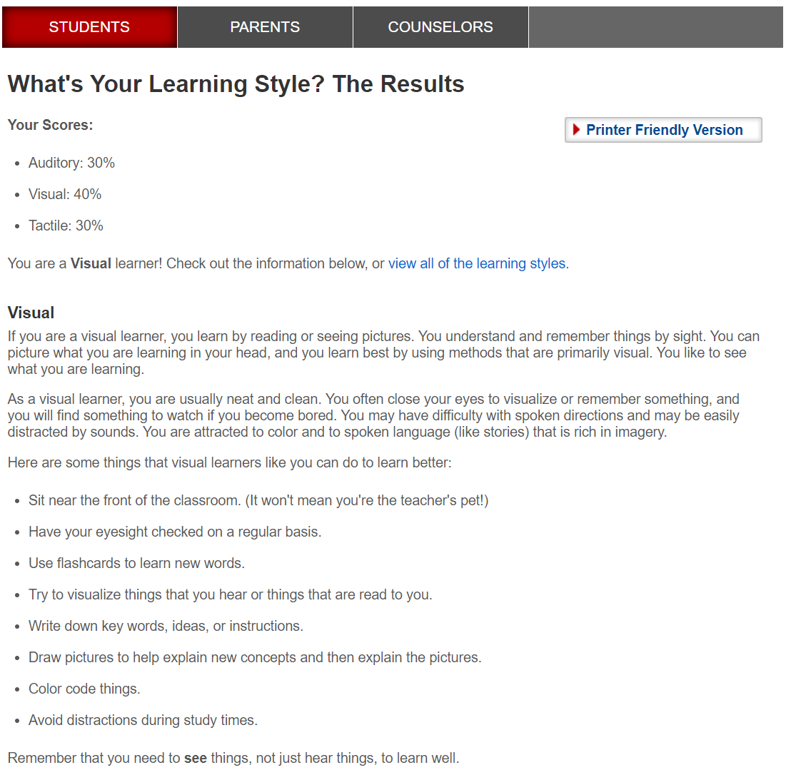
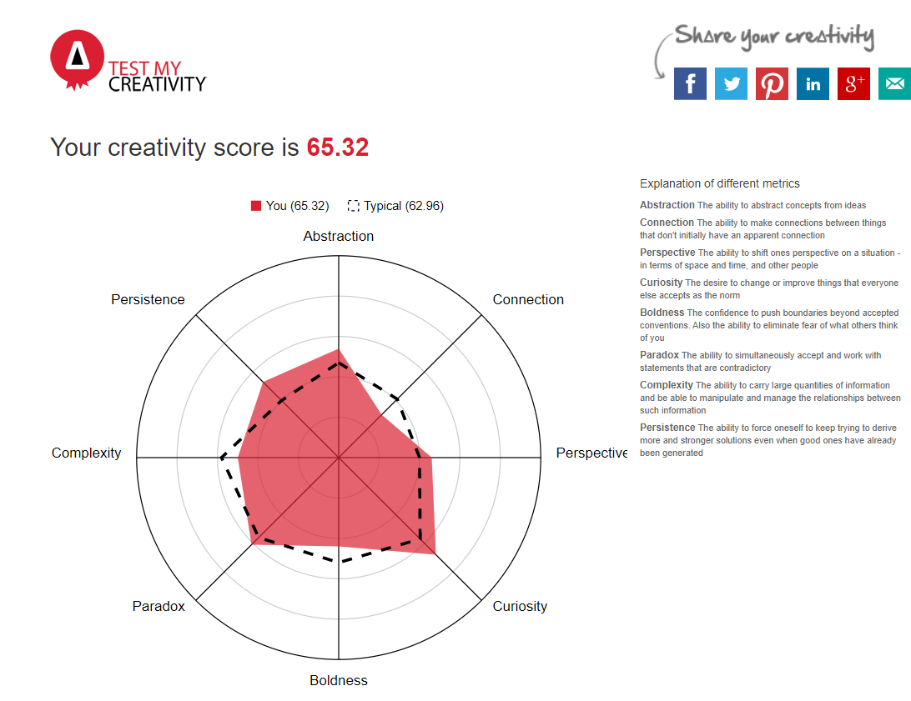

Name: Dean Robertson
Student ID: PZPNE2E336
Student E-mail: s3926447@student.rmit.edu.au
GitHub Public Repository URL: Here.
My name is Dean Robertson. I have a natural love of technology. I enjoy modding games to mold them as I wish, I have some basic coding and modeling experience due to this. my main goals are to both start a career and become an even better modder for the games I love. I have done various TAFE courses relating to IT. One fact about me is I am a solo Black Metal musician, and I play all instruments in it. Quite a task, but it is doable!
My first memory of being interested in how this technology works is playing the original 1993 Doom for the first time and having a discussion with someone about it; they said the game is really a 2D game that simply looks like a 3D one; all Doom levels are two-dimensional. I wondered was this was even possible, and the kind of mind and talents you would need to come up with something like that.
My IT experiences ranges from Basic coding, to modding games and tinkering with PCs since I was a preteen. I've always loved learning how technology works, especially PCs. With this course I hope to broaden my knowledge, and form a basis for a career in IT.
RMIT has a very good reputation in regards to IT; and I found it suited my interests perfectly. I plan on continuing my education here in the future as well.
Many different things; I've already learnt quite a bit I did not know already, and am very excited to learn more! Even though I have learned much, I have also learned technology is quite more advanced than I thought it was. I am also looking to start a career in IT.
This position is of a System Administrator that manages many different systems. This position is appealing to me not only because of money, but the work itself, the career possibilities and the opportunity to work with so many different systems. Not only would working in Parliament House be extremely interesting, I would most likely be able to use all of my prior experience to excel in this particular job. The job is felxible and pays well, while also being in my particular interests;That is why this would be a dream job for me.
I would need the skills (and qualifications) of many different kinds of technology to be competent in this position, which would most likely be gained from previous jobs and education in this field.
My current skillset includes moderate skill with Office 365 and M365 service. With further experience and learning I plan to learn about many more systems.
My goal is to simply start small and work my way up; I can't predict the future, but I can work towards the future I want.
The Myers-Briggs test: Here.
Learning test:

Creativity test:
The results of these tests show me that I am an introverted person that values their individuality. I am a visual learner,
These results show me I generally prefer working on my own but can work effectively with other people if needed. I feel like my talents would be put to use effectively if I am in the correct environment. However I would need to be open about this.
I know I need a task in a team to work on. Generally I will think of something and present it to the team and go from there.
My project idea would be to create an app to improve productivity and study time - It would time both study times (or anything similar) and breaks. Furthermore from a student perspective, this would help significantly. The app will help students (Or anyone needing it) to work as efficiently and as effectively as possible, using my own experience to see what works and what does not, for example I find it far more effective if I have a deadline or if I tell someone I will have something completed by a certain day or time as opposed to relying on my own Intrinsic motivation.
Throughout my education beyond high school I've attended many courses - both on-campus and online. And as i'm sure most of us can attest to, motivation is very difficult where online learning is concerned. One can get (very easily) distracted by anything and everything. My idea consists of an app that uses a reward system which I find the most effective for me; the user can then essentially earn their time where motivation is a prime downfall, for example in online learning. Motivation is (For me at least) quite difficult to come by, and I generally need some kind of external factor to help me stay motivated and complete my tasks. I find when I have these said factors I am far more likely to stay motivated, with the added benefit of getting more work done as well.
I have had many friends attempt online learning and drop out for varying reasons; motivation being one of the prime reasons. Without that on-campus ability many people simply are not up to it. From that I wondered if it was really as hard as it sounded - and it is, to an extent! Studying times become fragmented and inefficient; you can lose so much time far to quickly. It has also been documented that having breaks in between chunks of work is far more efficient than simply working for one long stretch - a marathon, if you will. This is where the idea originated.
According to this article mobile app downloads are in the literal billions. Therefore it would make a small amount of sense to delve into this area as far as app development or IT in general is concerned. As I'm sure most of us can attest to, motivation is very difficult where online learning is concerned; motivations is very difficult to conjure up when there is none. It can really prop us up so we can be our best, or it can bring us down and bring about some very negative feelings. My idea consists of an app that uses a timer system which I find the most effective for me; the user can then essentially earn leisure time, whether it be small/large breaks or simply for the motivational factor when needed.
The features of the app are as follows - In one scenario a student works on their studies for an hour, They could then choose to earn additional time; this would be up to the user. For most I would choose 1 hour working and half an hour of break time, then ramp it up from there to where it would feel comfortable; but this is simply what works for me. This would maximize one's productivity; further consideration for The app itself would be a "smart" timer, that learns from the user's previous sessions and adapts realistically to then be able to eliminate the tedium of setting these timers themselves. As noted in the previous section, this app's main goal is targeting efficiency and productivity; time is everyone's most valuable resource. I'm confident this app would help me and many others where productivity or lack of motivation is a concern.
The technology needed would simply be MIT app inventor and any sufficient smartphone; and/or a basic PC able to run the software further development for PC and Mac would also be possible. Github would be another useful and necessary tool for the development of this app if working in a team. Other possible avenues where coding is concerned would be: Swift, Objective-C, Java, Python, HTML/CSS, etc. Atom and Visual studio would also be required if coding outside of MIT app inventor. A smartphone to act as a testbed would also most likely be necessary.
Skills required: Some very basic programming knowledge and maybe some small lack of time management... All software to my knowledge is completely free to download; the only thing needed will be a PC and an internet connection. As far as a smartphone, most people own one. However for development apps I personally would purchase a second phone (most likely second hand) simply to act as a "testbed" for my apps and ideas, this would most likely not incur much additional cost if a mid to lower-end smartphone is purchased. The phone in question could be acquired through multiple means; mobile phone shops themselves, ebay, friends etc.
The outcome for me and anyone else who uses this would be increased motivation and productivity for their relevant studies, which will have immediate benefit. In the end the user will have less fragmented study time (A very bad habit of mine) and can be trained to study in a way that is efficient and productive. This way they will be able to get more things done in a shorter time span.
The potential cons of this app would be no way to enforce the work itself - it would be up to the individual themselves. Discipline is needed from the user.
Chart: https://en.wikipedia.org/wiki/Personality
Analyst: https://www.16personalities.com/?utm_source=email&utm_medium=welcome-architect&utm_campaign=logo
Watch: https://wpclipart.com/time/stopwatch/running_stopwatch_shaded.png.html